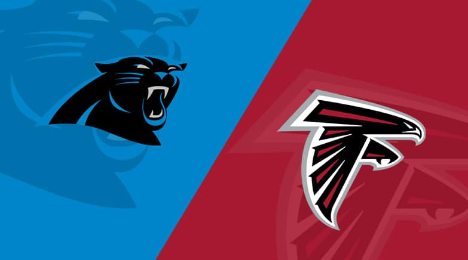
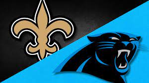
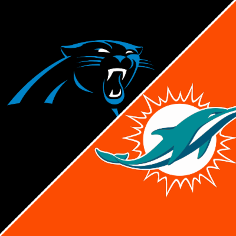
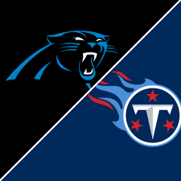
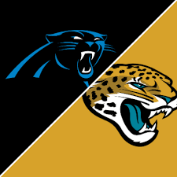

By Jared Thompson, Published on 1/8/24
Introduction
I'll be writing about the games after they happen for the Panthers and my takeaways from each game for the Carolina Panthers. There will be some good games and some very bad games but I'll give my takes for each game. This season might be rough with a new coaching staff, new offense with a rookie QB, and a lot of new faces on the team. But I'm very excited for this new Era of the Carolina Panthers post Matt Rhule and into the Frank Reich Era.
Week 1 at Atlanta
This one was tough to watch as Bryce Young has a very shaky start to his NFL career. He throws two interceptions and one touchdown in his first game and the Panthers lose 24-10 against the Atlanta Falcons. I did expect the offense to not have any chemistry yet due to the offense being a bunch of veterans we signed in the offseason. The Defense however played good until the end when they were tired but Brian Burns proves why he should get a pay raise sometime between now and the start of next season. This was a warmup for Bryce Young and for his first NFL game, it wasn't as bad as some people think. However we did lose Jaycee Horn with a hamstring injury and will be out for at least 4 weeks.
Week 2 vs New Orleans
This game was really close until the end where we gave up a touchdown in the 3rd quarter. But Bryce looked a lot better other than the fumble he had but that was the only turnover this week and he did get hurt in this game he said after the game. Again we cannot run the ball and Miles Sanders is getting off to a slow start this season but I don't blame him because our offense line is very bad. We did lose Shaq Thompson due to a broken fibula injury for the rest of the season. Another key part of our defense out for the season. We lost this game in a very close game 20-17. The offense started to look good right at the end of the game when it was too late to only be down by 3. But they did recover the onside to win the game.
Week 3 at Seattle
This game was close in the first half. Bryce Young didn't play this game due to an ankle injury he had during last week's game but he played through it and didn't practice all week. So Andy Dalton got the start and played really good but our defense fell apart in the second half and we lost 37-27. The run defense couldn't stop Kenneth Walker and our banged up secondary couldn't cover DK Metcalf and Tyler Lockette. The injuries of Jaycee Horn and Shaq Thompson are both big losses for this defense and if we had these two in this game, we could've won this game but we had C.J. Henderson guarding DK Metcalf this entire game and it showed that he cannot cover any team's WR1. He has to figure it out soon because next week, he has to guard arguably the best WR in the league in Justin Jefferson.

Week 4 vs Minnesota
This game was just like last week where we started off hot after Kirk Cousins on the first drive threw a 99 yard pick six on the goal line but our offense was shut down by Harrison Smith in the second half along with the entire Vikings defense. After the fumble recovery Touchdown in the third, this game was over and the offense couldn't do anything and we lost 21-13. C.J. Henderson again struggled in guarding the WR1 of the other team and this defense really needs Jaycee Horn back soon if the Panthers want a chance to make the playoffs. Frank Reich needs to stop limiting Bryce Young and needs to let him throw the ball more than 5 yards. The play calling needs to be a lot better. In all of the games Bryce has played when he has thrown the ball down field, it works but the second that works, Frank calls a bunch of dumb plays like screens that don't go anywhere and run plays that don't go anywhere more than 2 yards an attempt.

Week 5 at Detroit
Another very bad coaching game for this new coaching staff. The offense struggled in the first half and the defense did as well being down 28-10 at half time. Although we did see some hope in the second half, we still lost the game 42-24. Bryce Young did throw for 3 touchdowns but the offense had 3 turnovers this game with Bryce throwing 2 interceptions and Miles Sanders fumbling once in which it all happened in the first half. If we play like we did in the second half for the entire game, there is a world where we could've had a better chance of winning. But I know this is hard for every Panthers fan but on the bright side, Bryce looks better and better each and every week. However, I think Chubba Hubbard and Laviska Shenault should be the only ones running the ball because Miles doesn't look that good and he's been questionable every game since week 3 and I think playing a Miami defense who isn't the greatest against the run, could have a great game next week.

Week 6 at Miami
This game had lots of hope for the fans as this one slipped away from us. After leading in the first quarter 14-0, we gave up 21 unanswered points to be down 21-14 at halftime. And this game did expose Frank Reich who after this game, gave the OC, Thomas Brown, the play-calling duties as his plays weren't working in the second half. This was a tough game on the defensive side of the ball. With both starting free safeties out for this game in Xavier Woods and Vonn Bell, the Dolphins who have both Tyreek Hill and Jaylen Waddle, torched our secondary. Not only did they torch us in the air but on the ground as well. Raheem Mostert had 3 total touchdowns. 2 of them were rushing and 1 receiving touchdown. The Bryce Young to Adam Thielen connection is unreal with Theilen getting 11 catches for 115 yards and had 1 touchdown. Bryce was 23/38 for 217 yards and of course had the touchdown to Thielen. The running game was at it's best so far this season as Miles Sanders was ruled out for this game and Cubba Hubbard took over and ran for 88 yards and a touchdown. Laviska Shenault did have some impact before leaving with an ankle injury. But the defense did get an interception in the 4th quarter as Troy Hill, who we signed for corner depth, got a pick-six against Miami backup QB Mike White. But this is a good sign because the Panthers have a bye week next week and this team needs to rest and get healthy before a rookie QB matchup against C.J. Stroud and the Houston Texans.
Week 8 vs Houston
For the first time this year, the Carolina Panthers won a football game. This game was a defensive showdown between both teams, but the Panthers came on top 15-13 thanks to a 23 yard game winning field goal from Eddy Pinero. Bryce Young had a game to remember as he outplayed his friend CJ Stroud in the battle between the first pick and the second pick in the last draft earlier this year. The passing game was really strong with Bryce throwing for 235 yards and a touchdown pass to Tommy Tremble. On the other hand, the rushing game was irrelevant. Cubba Hubbard had 15 carries for 28 yards and averaged 1.9 yards a run which wasn't great but most of those came late in the 4th when the Panthers were in field goal range. The defense came up big in this game sacking CJ twice and Donte Jackson forcing a fumble with Xavier Woods coming back from injury recovered the fumble for the first fumble recovered by the defense this year. Overall, it was a hard fought battle between the Texans and Panthers and hopefully we can have more fun matchups with them in the future.

Week 9 vs Indianapolis
This game was back to the normal Panthers this week losing 27-13 to the Colts. And again it's the same story as the other losses where the offense was nonexistent and the defense was the only ones who showed up and only allowed 13 points. The other 14 points for the Colts came from 2 pick-sixes from Bryce Young and 3 interceptions total. The run game was great until the offense lost a lot of momentum. And of course when Bryce had this game it was the same week where CJ Stroud, who Byrce beat last week, went for 470 yards and 5 touchdown passes and broke a lot of rookie records. But I have seen a lot of Panthers fans cry for something to happen and I agree but I also see the same fans wishing they would've chosen CJ over Bryce. But if you put CJ in this offense, he would've done the same as Bryce did. But again we have to be patient with Bryce because if you look at former 1st overall picks since 1990 like Peyton Manning, Andrew Luck, and recently Trevor Lawrence, they all had bad rookie seasons and had a bounce back so this will be an interesting offseason for this team because we have the most cap space in the league and I hope we can fix our offensive line and get some more weapons for Bryce to throw to.

Week 10 at Chicago
This game was really bad to watch as the Panthers lost another winnable game to the Chicago Bears 16-13. And the offense didn't score a touchdown on one of the worst defenses in the league. Bryce didn't have that bad of a game it's just he doesn't have enough time to look for open receivers when the offensive line can't hold a block more than 2 seconds and a 300 lb guy is running a Bryce and the play blows up and he just has to get rid of it or runs for 2 yards. He threw the ball 38 times and completed 21 of them for 185 yards and had no touchdowns or interceptions. The defense tried to hold up but couldn't towards the end of the game when they were tired. Brian Burns, who suffered a concussion against the Colts last week was ruled out for this game and if he played, the Panthers would've won the game. Frank Reich needs to be fired after sending Eddy Pinero for a 59 yard field goal in Chicago with the wind against us and his career highest is only 56 and well if you guessed what happened after, he missed it and we lost. There was still time for the offense to get into field goal range for Pinero but Frank made a costly decision and it cost us the game. But after this long break before our next game against the Cowboys, we can hopefully get Burns back and some other key defensive players like Jaycee Horn and others.

Week 11 vs Dallas
This game went as expected with how bad this team is playing against one of the best in the entire NFL. But I will say we were close in the beginning but after Bryce Young threw the pick-six, the game was over. The offense was sluggish like it always is this season and then the cowboys offense was rolling and eventually our defense was tired and let up 33 points. My only two takeaways from this game was that the offensive line is terrible and we lost our best one in Austin Corbett for the year with him injuring his same knee that kept him out for the first 8 games this year. Another thing is the receivers other than Adam Thielen cannot separate off their guy and can't get open for Bryce and with our offensive line being terrible, has no time to find these open receivers.

Week 12 at Tennessee
Another bad offensive game for the Panthers as they lose 17-10 against the Tennessee Titans. We had so many chances to win this game in the second half whether it was penalties or bad offensive line play, we couldn't get it done. Just like last week, Bryce has no time in the pocket and always has to roll out and extend the play and can't because our receivers cannot get open and Bryce either takes a sack or throws the ball away and then is forced to punt. It's really hard on Panthers fans watching this offense put up nothing in games and the defense played really good but again the only way we are going to win games is if the defense can get a touchdown because our offense cannot do that at all. But good news Panther fans as after 11 games and going 1-10, Frank Reich is finally fired and now the special teams coordinator, Chris Tabor, is now the interim head coach and Thomas Brown and Jim Caldwell will run the offense and make the calls. So maybe our offense can now produce with Frank out the door.
Week 13 at Tampa Bay
The team looked a lot better with Frank gone and still we find ways to lose games. The Panthers lose to the Bucs 21-18. The offense looked decent with Chubba Hubbard with 104 rushing yards and 2 touchdowns on the day and Bryce looked calm and good but he threw a game losing interception at the end of the game. But also it was 3rd and 1 and 4th and 1, I don't understand the play-call to pass it both times and lose when Hubbard was running really well against the defense. The Panther's defense played a good game until the Panthers took the lead and then the next play gave up a 75 yard touchdown to Mike Evans, who continued to cook us just like the last game against the Panthers. Xavier Woods had a nice interception and Marquis Haynes had a sack. Also Brian Burns, as a team captain, goes out and loses his anger and takes it out with a punch to a Bucs OL and gets ejected from the game and now with the offense struggling, wished Burns went to Chicago to keep DJ Moore to help with Bryce's development.

Week 14 at New Orleans
Another day, another way for the Carolina Panthers to lose. The offense despite having 29 more offensive plays and outgaining the Saints 303 to 207 and still losing by 22 points. The offense is the main problem on this team, the defense played really good football up until the 4th quarter and got tired and let up the last two touchdowns of the game late in that quarter. Bryce Young really struggled this game and ended the first half 3/15 for 29 yards. Both Chubba Hubbard and Miles Sanders did their job but the rest of the offense didn't and it showed. The drops and overthrows by Young made every fan stop watching but it's ok Panther fans, we only have four more weeks until the torture is over.
Week 15 vs Atlanta
The second win of the season came against the Falcons 9-7 in a defensive showcase for both teams and on the other hand both offenses struggled in the heavy rain throughout the game. The defense for the Panthers showed out by only allowing 204 yards in total and Xavier Woods getting an interception to lead the Panthers to the game winning field goal. The offense as expected struggled a lot. Bryce Young's stats for this game was 18/24 for 167 yards and no touchdowns or interceptions but did have a very clutch drive at the end of the game to win it. Even though the Panthers won, we didn't even get a touchdown this game and our defense shows why this team can be competitive for the next couple of years. But overall a good defensive win but again the offense as always this season, struggles again.
Week 16 vs Green Bay
One of the most exciting games to watch the Panthers this year, as Bryce Young finally broke out for over 300 yards and had 2 touchdowns and almost came back after being down 23-10 at halftime. Even though they lost to a final score of 33-30, the defense who played really well last week didn't play well at all. Letting Jordan Love and Aaron Jones cook them in the first half but the offense showed some flashes and the Young to Chark connection us Panthers fans kept on hearing throughout training camp finally showed out and it was really good that Chark finally got open and scored both touchdowns from Young. But again we are 2-13 and we need to sign a lot of offensive line and wide receivers this offseason to help out Bryce even more.

Week 17 at Jacksonville
This was a very disappointing game for the Panthers. On one hand, we lost 26-0 to a team that was on a 4 game losing streak and the longest game streak of not getting shut out in a game. The Panthers before this game hadn’t gotten shut out in 342 games which dates back to 2002, which is older than I am. But, this season cannot end any faster as most fans are looking towards free agency and the draft which also would be nice if we had our first rounder this year but we don’t and now Chicago has the first pick again in the draft. Other than those things, the game itself was bad. Bryce Young had no time in the pocket and was sacked 6 times and you cannot win games getting sacked like that. But a positive from this game was that Adam Thielen now has over 100 receptions for over 1000 yards on the season which is amazing for his age at 33.

Week 18 vs Tampa Bay
A pathetic way to end a horrible season. After not getting shut out in over 20 years, the Panthers get shut out in back to back games. The only positive is the defense holding the Bucs to 9 points but the offense couldn’t score once. Another positive is that Derrick Brown now has the most tackles for a defensive linemen in one season with 103 tackles which is very impressive. Jaycee Horn showing why he was a top 10 draft pick in the draft and Brain Burns showing why he should be paid a lot to keep him around. But now the suffering is over for Panthers fans as now we look into the offseason. With 37 million in cap space, we could hopefully keep some key defensive players and also help rebuild the offensive line and get Bryce Young some receivers other than Adam Thielen.
Conclusion
As now the season ended, us Panthers fans wanted something to happen but Frank Reich and his coaching staff wasted Bryce Young’s rookie year and now he can hopefully take the next step in new coaches and a new GM. But now we wait for free agency and the NFL Draft to arrive but hopefully we hire a good HC and GM between now and the draft and free agency.